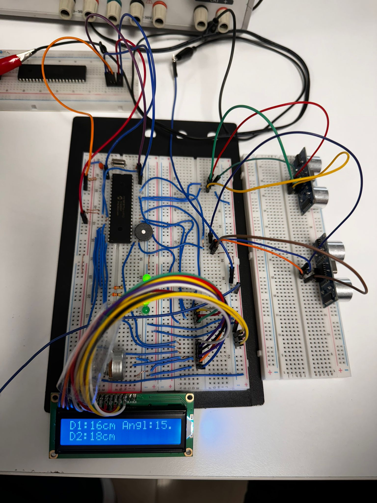
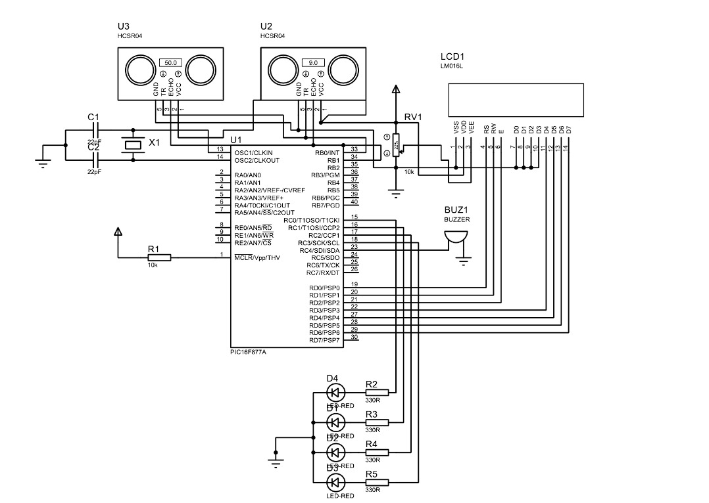

Project Overview
This project focused on designing a car park sensor system using the PIC16F877A microcontroller. The system utilized two HC-SR04 ultrasonic sensors to measure the distance and angle of objects near the vehicle, providing the driver with audio and visual feedback to ensure safe parking.
Materials
- 20MHz Crystal
- 2 x 22pF Capacitors
- 16x2 LCD Display
- PIC16F877A Microcontroller
- 1 x 10kΩ Resistor
- 4 x 330Ω Resistors
- 4 x LEDs
- Buzzer
- 2 x HC-SR04 Ultrasonic Sensors
- 10kΩ Potentiometer
- 5V Adapter
Project Description
The car park sensor system is designed to prevent collisions during parking by providing real-time feedback to the driver. It uses ultrasonic sensors to detect objects, and the measured distances are conveyed both visually and audibly. The main components of the system are:
- PIC16F877A Microcontroller: The core of the system, responsible for processing the distance data received from the ultrasonic sensors.
- HC-SR04 Ultrasonic Sensors: These sensors detect the distance and angle of objects around the vehicle.
- 16x2 LCD Display: The display shows the measured distance information, allowing the driver to visually gauge how far they are from an obstacle.
- Buzzer: Provides audible feedback to alert the driver when an object is detected within a critical distance.
- LEDs: The LEDs give additional visual warnings, lighting up based on the proximity of nearby objects.
- 20MHz Crystal & Capacitors: These components stabilize the microcontroller's operation, ensuring accurate readings and system stability.
- Resistors & Potentiometer: Used to fine-tune the system, ensuring proper voltage levels and LED brightness.
Implementation Steps
The project was implemented in the following steps:
- System Design: The car park sensor system was designed using the PIC16F877A microcontroller and HC-SR04 sensors. The microcontroller processed the sensor data and provided output to the LCD, LEDs, and buzzer.
- Sensor Integration: Two ultrasonic sensors were placed on the vehicle to measure the distance and angle of nearby objects. This data was transmitted to the microcontroller for real-time processing.
- Display & Alert System: The 16x2 LCD displayed distance information, while the buzzer and LEDs provided audible and visual alerts based on the sensor readings.
- Stabilization: The system was stabilized using a 20MHz crystal oscillator and capacitors to ensure reliable operation.
Testing and Results
- The system was tested in various parking scenarios, including tight spaces and reversing maneuvers. The ultrasonic sensors successfully detected objects within range, and the LCD displayed accurate distance information.
- The buzzer provided timely alerts, increasing in frequency as the vehicle approached obstacles.
- LEDs illuminated sequentially based on the proximity of the object, providing an extra layer of warning for the driver.
Project Images


Conclusion
The Car Park Sensor project successfully demonstrated the use of ultrasonic sensors and a microcontroller to provide real-time feedback during parking. The combination of visual (LCD and LEDs) and audible (buzzer) warnings ensured a safer and more efficient parking experience. The system can be further enhanced by adding more sensors or improving the visual interface.